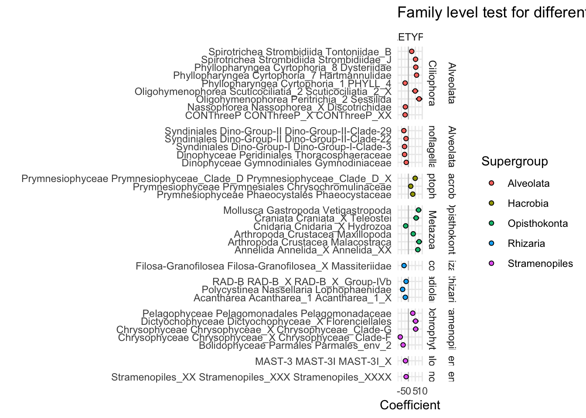

Code
library(tidyverse); library(phyloseq); library(ape)
library(ggupset)Set up R environment
library(tidyverse); library(phyloseq); library(ape)
library(ggupset)Import previously sequenced and analyzed tag-sequence data. See https://shu251.github.io/microeuk-amplicon-survey/ for additional information.
load("input-data/MCR-amplicon-data.RData", verbose = T)Loading objects:
phylo_obj
samplenames
physeq_wnames
metadata_mcr
asv_wtax_qc
TAX
tax_matrix
physeq_mcr# physeq_mcrvent_ids <- c("BSW", "Plume")
vent_ids <- c("BSW","Plume", "Shrimpocalypse", "LotsOShrimp", "X18", "OMT", "OldManTree", "Rav2", "MustardStand", "ShrimpHole", "WhiteCastle", "ArrowLoop")
vent_fullname <- c("Background","Plume", "Shrimpocalypse", "Lots 'O Shrimp", "X-18", "Old Man Tree", "Old Man Tree", "Ravelin #2", "Mustard Stand", "Shrimp Hole", "White Castle", "Arrow Loop")
site_ids <- c("VD", "Piccard")
site_fullname <- c("Von Damm", "Piccard")
# Colors for VD and Piccard
site_colors <- c("#418b84", "#943b36")
# site_colors
# Vent colors
vent_colors <- c("#c2bfc2","#ebdac9", "#c02c5b", "#cfae20", "#86952c", "#a88fab", "#a88fab", "#70b2aa", "#8c906d", "#806fa2", "#8cabcf", "#609482")
names(vent_colors) <- vent_fullname
names(site_colors) <- site_fullname
# Cooler colors for VD
# c("#4e7d4b") green
#569c91 blue
#ae8fbb purple
#ce86ba a lighter purple
#31464a dark dark green
#8c906d grey green
#bab446 yellow green
#ebdac9 white - cream
#c2bfc2 grey
# Piccard
#c02c5b pink - red
#d65a9e pink
##cfae20 yellow
all_taxa_color = c("#fa9fb5", "#c51b8a", "#67000d", "#ef3b2c", "#ffffcc", "#feb24c", "#c7e9b4", "#1d91c0", "#deebf7", "#253494", "#9e9ac8", "#238b45", "#54278f", "#bdbdbd", "#252525", "#fa9fb5", "#c51b8a", "#67000d", "#ef3b2c", "#ffffcc", "#feb24c", "#c7e9b4", "#1d91c0", "#253494", "#9e9ac8", "#238b45", "#54278f", "#bdbdbd", "#252525")Import environmental parameters and look at Mid-Cayman Rise sites.
env_params <- read.delim(file = "input-data/table_wenv.txt", sep = " ")
# env_params
subset_metadata <- env_params %>%
filter(SAMPLETYPE != "Incubation") %>%
filter(VENT != "Quakeplume") %>%
select(SITE, VENT, SAMPLETYPE, RATE_min, EUK_ml, GRAZING_EFFECT_hr) %>%
distinct() %>%
group_by(SITE, VENT, SAMPLETYPE) %>%
summarise(RATE_min_avg = mean(RATE_min),
EUK_ml_avg = mean(EUK_ml),
GRAZING_EFFECT_hr_avg = mean(GRAZING_EFFECT_hr)) %>%
distinct() %>%
pivot_longer(cols = ends_with("_avg"))`summarise()` has grouped output by 'SITE', 'VENT'. You can override using the
`.groups` argument.metadata_numeric <- metadata_mcr %>%
filter(SAMPLETYPE != "Incubation") %>%
select(VENT, SITE, SAMPLETYPE, DEPTH, TEMP, pH, PercSeawater, Mg, H2, H2S, CH4, ProkConc) %>%
distinct() %>%
pivot_longer(cols = DEPTH:ProkConc, values_to = "VALUE_TMP") %>%
mutate(value = as.numeric(VALUE_TMP)) %>% select(-VALUE_TMP) %>%
bind_rows(subset_metadata)Code to make tile plot for environmental parameters, but may skip this.
# tileplot_env <- function(x){
# metadata_numeric %>%
# filter(name == x) %>%
# ggplot(aes(x = name, y = VENT, fill = value)) +
# geom_tile(color = "black") +
# facet_grid(SITE + SAMPLETYPE ~ ., switch = "both", space = "free", scale = "free") + theme_linedraw() +
# theme(axis.text.y = element_blank(),
# strip.text = element_blank(),
# strip.background = element_blank(),
# axis.ticks = element_blank(),
# strip.placement = "outside",
# legend.title = element_blank(),
# legend.position = "top",
# legend.text = element_text(size = 5),
# panel.background = element_blank(),
# panel.border = element_blank(),
# panel.grid = element_blank()) +
# labs(x = "", y = "") +
# scale_fill_distiller(palette = "Reds", direction=2, na.value = "grey50")
# }Optional plot, likely will not use.
# plot_grid(
# tileplot_env("TEMP") +
# scale_fill_distiller(palette = "YlOrRd", direction=2, na.value = "grey50") +
# theme(axis.text.y = element_text(color = "black", hjust = 1, vjust = 0),
# strip.text.y = element_text(color = "black", hjust = 0, vjust = 0),
# strip.placement = "outside"),
# tileplot_env("PercSeawater") +
# scale_fill_distiller(palette = "Blues", direction=2, na.value = "grey50"),
# tileplot_env("pH") +
# scale_fill_distiller(palette = "YlGnBu", direction=2, na.value = "grey50"),
# tileplot_env("Mg") +
# scale_fill_distiller(palette = "Purples", direction=2, na.value = "grey50"),
# # endemic_env("NO3"),
# tileplot_env("H2") +
# scale_fill_distiller(palette = "Purples", direction=2, na.value = "grey50"),
# tileplot_env("CH4") +
# scale_fill_distiller(palette = "Purples", direction=2, na.value = "grey50"),
# tileplot_env("H2S") +
# scale_fill_distiller(palette = "Purples", direction=2, na.value = "grey50"),
# tileplot_env("ProkConc") +
# scale_fill_distiller(palette = "Oranges", direction=2, na.value = "grey50"),
# tileplot_env("EUK_ml_avg") +
# theme(axis.text.y = element_text(color = "black", hjust = 1, vjust = 0),
# strip.text.y = element_text(color = "black", hjust = 0, vjust = 0),
# strip.placement = "outside") +
# scale_fill_distiller(palette = "Oranges", direction=2, na.value = "grey50"),
# tileplot_env("GRAZING_EFFECT_hr_avg") +
# scale_fill_distiller(palette = "Oranges", direction=2, na.value = "grey50"),
# nrow = 1,
# rel_widths = c(4,1,1,1,1,1,1,1, 4, 1)
# )Ordination analysis and methods to look at whole protistan communities at MCR.
# | message: false
library(vegan); library(ggdendro); library(compositions)Loading required package: permuteLoading required package: latticeThis is vegan 2.6-2Welcome to compositions, a package for compositional data analysis.
Find an intro with "? compositions"
Attaching package: 'compositions'The following object is masked from 'package:ape':
balanceThe following objects are masked from 'package:stats':
anova, cor, cov, dist, varThe following objects are masked from 'package:base':
%*%, norm, scale, scale.default# head(asv_wtax_qc)
asv_mcr_numeric <- asv_wtax_qc %>%
filter(value > 0) %>%
group_by(FeatureID, SAMPLENAME) %>%
summarise(MEAN_ACROSS_REPS = mean(value)) %>%
select(FeatureID, SAMPLENAME, MEAN_ACROSS_REPS) %>%
pivot_wider(names_from = SAMPLENAME, values_from = MEAN_ACROSS_REPS, values_fill = 0) %>%
column_to_rownames(var = "FeatureID")`summarise()` has grouped output by 'FeatureID'. You can override using the
`.groups` argument.Transform compositional data, center log ratio.
logratio_mcr <- data.frame(compositions::clr(t(asv_mcr_numeric)))
# dim(logratio_mcr)
# ?alr()
# ?ilr()
pca_logratio <- prcomp(logratio_mcr)
variance_logratio <- (pca_logratio$sdev^2)/sum(pca_logratio$sdev^2)
barplot(variance_logratio, main = "Log-Ratio PCA Screeplot", xlab = "PC Axis", ylab = "% Variance",
cex.names = 1.5, cex.axis = 1.5, cex.lab = 1.5, cex.main = 1.5)
# Extract PCA points
mcr_pca_pts <- data.frame(pca_logratio$x, SAMPLE = rownames(pca_logratio$x)) %>%
rownames_to_column(var = "SAMPLENAME") %>%
separate(SAMPLENAME, c("SITE", "SAMPLETYPE", "YEAR", "VENT"), " ",
remove = FALSE) Warning: Expected 4 pieces. Additional pieces discarded in 21 rows [1, 2, 3, 4,
5, 6, 7, 8, 9, 10, 11, 12, 13, 14, 15, 16, 17, 18, 19, 20, ...].# unique(mcr_pca_pts$VENT)
# vent_ids
# site_fullname
mcr_pca_pts %>%
mutate(VENT_ORDER = factor(VENT, levels = vent_ids, labels = vent_fullname),
SITE_ORDER = factor(SITE, levels = c("VonDamm", "Piccard"), labels = site_fullname)) %>%
mutate(TYPE = case_when(
SAMPLETYPE == "Incubation" ~ "Incubation",
TRUE ~ "in situ"
)) %>%
ggplot(aes(x = PC1, y = PC2)) +
geom_point(color = "black", stroke = 1.3, size = 5, aes(shape = SITE_ORDER, fill = VENT_ORDER, alpha = TYPE)) +
scale_shape_manual(values = c(21, 24)) +
scale_alpha_manual(values = c(1,0.5)) +
scale_fill_manual(values = vent_colors) +
theme_linedraw() +
guides(fill = guide_legend(override.aes = list(shape = c(22)))) +
geom_hline(yintercept = 0) + geom_vline(xintercept = 0)
Dendrogram analysis
# ?decostand()
# Relative abundance
rel_abun <- decostand(asv_mcr_numeric, MARGIN = 2, method = "total")
# Cluster dendrogram (average hierarchical clustering)
cluster_mcr <- hclust(dist(t(rel_abun)), method = "average")
dendro <- as.dendrogram(cluster_mcr)
mcr_dendro <- dendro_data(dendro, type = "rectangle")mcr_dendro_plot <- ggplot(segment(mcr_dendro)) +
geom_segment(aes(x = x, y = y, xend = xend,
yend = yend)) +
coord_flip() +
scale_y_reverse(expand = c(0.2, 0.5), breaks = c(0, 0.2, 0.4, 0.6, 0.8)) +
geom_text(aes(x = x, y = y, label = label, angle = 0, hjust = 0), data = label(mcr_dendro)) +
theme_dendro() + labs(y = "Dissimilarity") +
theme(axis.text.x = element_text(color = "black", size = 14), axis.line.x = element_line(color = "#252525"),
axis.ticks.x = element_line(), axis.title.x = element_text(color = "black",
size = 14))
# svg('figs/SUPPLEMENTARY-dendrogram-wreps.svg', w = 10, h = 8)
mcr_dendro_plot
asv_mcr_numeric_insitu <- asv_wtax_qc %>%
filter(value > 0) %>%
filter(SAMPLETYPE != "Incubation") %>%
group_by(FeatureID, SAMPLENAME) %>%
summarise(MEAN_ACROSS_REPS = mean(value)) %>%
select(FeatureID, SAMPLENAME, MEAN_ACROSS_REPS) %>%
pivot_wider(names_from = SAMPLENAME, values_from = MEAN_ACROSS_REPS, values_fill = 0) %>%
column_to_rownames(var = "FeatureID")`summarise()` has grouped output by 'FeatureID'. You can override using the
`.groups` argument.insitu_logratio_mcr <- data.frame(compositions::clr(t(asv_mcr_numeric_insitu)))
insitu_pca_logratio <- prcomp(insitu_logratio_mcr)
insitu_variance_logratio <- (insitu_pca_logratio$sdev^2)/sum(insitu_pca_logratio$sdev^2)
barplot(insitu_variance_logratio, main = "Log-Ratio PCA Screeplot", xlab = "PC Axis", ylab = "% Variance",
cex.names = 1.5, cex.axis = 1.5, cex.lab = 1.5, cex.main = 1.5)
# Extract PCA points for only insitu samples
insitu_mcr_pca_pts <- data.frame(insitu_pca_logratio$x, SAMPLE = rownames(insitu_pca_logratio$x)) %>%
rownames_to_column(var = "SAMPLENAME") %>%
separate(SAMPLENAME, c("SITE", "SAMPLETYPE", "YEAR", "VENT"), " ",
remove = FALSE) Warning: Expected 4 pieces. Additional pieces discarded in 13 rows [1, 2, 3, 4,
5, 6, 7, 8, 9, 10, 11, 12, 13].insitu_mcr_pca_pts %>%
mutate(TYPE = case_when(
SAMPLETYPE == "Incubation" ~ "Incubation",
TRUE ~ "in situ"
)) %>%
ggplot(aes(x = PC1, y = PC2)) +
geom_point(color = "black", size = 4, aes(shape = SITE, fill = VENT, alpha = TYPE)) +
scale_shape_manual(values = c(21, 24)) +
scale_alpha_manual(values = c(1,0.4)) +
theme_linedraw() +
guides(fill = guide_legend(override.aes = list(shape = c(22)))) +
geom_hline(yintercept = 0) + geom_vline(xintercept = 0)
# Keep same sample colors to compare to cluster analysis with in situ and Tf samples.Try to pair with dendrogram
out_labels <- as.data.frame(mcr_dendro$labels)
mcr_sample_order <- as.character(out_labels$label)alv <- c("Alveolata-Ellobiopsidae", "Alveolata-Perkinsea", "Alveolata-Unknown", "Alveolata-Chrompodellids", "Alveolata-Apicomplexa")
# head(asv_wtax_qc)
bubble <- asv_wtax_qc %>%
filter(value > 0) %>%
# Avg seq count by ASV across replicates
group_by(SAMPLENAME, SITE, VENT, SAMPLETYPE, Taxon, FeatureID) %>%
summarise(avg_seq = mean(value)) %>%
# Separate and curate taxa information
# filter(SAMPLETYPE != "Incubation") %>%
separate(Taxon, c("Domain", "Supergroup",
"Phylum", "Class", "Order",
"Family", "Genus", "Species"), sep = ";") %>%
filter(Domain == "Eukaryota") %>% #select eukaryotes only
filter(Supergroup != "Opisthokonta") %>% # remove multicellular metazoa
mutate(Supergroup = ifelse(is.na(Supergroup), "Unknown Eukaryota", Supergroup),
Phylum = ifelse(is.na(Phylum), "Unknown", Phylum),
Phylum = ifelse(Phylum == "Alveolata_X", "Ellobiopsidae", Phylum),
Supergroup = ifelse(Supergroup == "Alveolata", paste(Supergroup, Phylum, sep = "-"), Supergroup)) %>%
mutate(SUPERGROUP = case_when(
Supergroup %in% alv ~ "Other Alveolata",
Supergroup == "Eukaryota_X" ~ "Unknown Eukaryota",
Phylum == "Cercozoa" ~ "Rhizaria-Cercozoa",
Phylum == "Radiolaria" ~ "Rhizaria-Radiolaria",
Phylum == "Ochrophyta" ~ "Stramenopiles-Ochrophyta",
Phylum == "Opalozoa" ~ "Stramenopiles-Opalozoa",
Phylum == "Sagenista" ~ "Stramenopiles-Sagenista",
TRUE ~ Supergroup
)) %>%
# Taxa to supergroup
mutate(SupergroupPhylum = SUPERGROUP) %>%
group_by(SAMPLENAME, SITE, VENT, SAMPLETYPE) %>%
mutate(TOTAL_SEQ = sum(avg_seq)) %>%
ungroup() %>%
group_by(SAMPLENAME, SITE, VENT, SAMPLETYPE, SUPERGROUP) %>%
summarise(SUM = sum(avg_seq),
REL_ABUN = SUM/TOTAL_SEQ) %>%
mutate(SAMPLENAME_ORDER = factor(SAMPLENAME, levels = mcr_sample_order)) %>%
ggplot(aes(x = SAMPLENAME_ORDER, y = SUPERGROUP, size = REL_ABUN)) +
geom_point(shape = 21, color = "white", aes(size = REL_ABUN, fill = SUPERGROUP, alpha = 0.4)) +
scale_size_continuous(range = c(2,14)) +
# facet_grid(. ~ SITE, scales = "free", space = "free") +
theme_minimal() +coord_flip() +
theme(legend.position = "none",
axis.text.x = element_text(color = "black", angle = 45, hjust = 1, vjust = 1))`summarise()` has grouped output by 'SAMPLENAME', 'SITE', 'VENT', 'SAMPLETYPE',
'Taxon'. You can override using the `.groups` argument.Warning: Expected 8 pieces. Additional pieces discarded in 10924 rows [3, 10,
11, 12, 13, 14, 18, 19, 20, 21, 23, 27, 28, 30, 31, 32, 33, 34, 35, 38, ...].Warning: Expected 8 pieces. Missing pieces filled with `NA` in 6487 rows [1, 2,
4, 5, 6, 7, 8, 9, 15, 16, 17, 22, 24, 25, 26, 29, 36, 37, 48, 49, ...].`summarise()` has grouped output by 'SAMPLENAME', 'SITE', 'VENT', 'SAMPLETYPE',
'SUPERGROUP'. You can override using the `.groups` argument.bubble
# mcr_dendro_plot + bubble + patchwork::plot_layout(ncol = 2) + patchwork::plot_annotation(tag_levels = "a")load("input-data/MCR-amplicon-data.RData", verbose=TRUE)Loading objects:
phylo_obj
samplenames
physeq_wnames
metadata_mcr
asv_wtax_qc
TAX
tax_matrix
physeq_mcr# unique(asv_wtax_qc$SITE)
head(asv_wtax_qc)# A tibble: 6 22
FeatureID SAMPLE value Taxon Conse SAMPL VENT SITE SAMPL DEPTH SAMPL
<chr> <chr> <dbl> <chr> <dbl> <chr> <chr> <chr> <chr> <chr> <chr>
1 00056209 52_MC 0 Euka 0.8 "Picca Lots Picc "" "" Incuba
2 00056209 53_MC 0 Euka 0.8 "Picca Lots Picc "" "" Incuba
3 00056209 54_MC 0 Euka 0.8 "VonDa Must VonD "" "" Incuba
4 00056209 55_MC 0 Euka 0.8 "VonDa Shri VonD "" "" Incuba
5 00056209 57_MC 0 Euka 0.8 "Picca Shri Picc "" "" Incuba
6 00056209 58_MC 0 Euka 0.8 "VonDa Plume VonD "" "" Incuba
# with 11 more variables: SAMPLETYPE_BIN <chr>, YEAR <chr>, TEMP <chr>,
# pH <chr>, PercSeawater <chr>, Mg <chr>, H2 <chr>, H2S <chr>, CH4 <chr>,
# ProkConc <chr>, Sample_or_Control <chr>, and abbreviated variable names
# Consensus, SAMPLENAME, SAMPLEID, SAMPLETYPE# head(TAX)Function to generate upsetR plot with varied taxonomic levels.
Questions:
How many ASVs are shared among vent sites within Von Damm and Piccard?
What about shared ASVs across each vent field?
Is there a taxonomic level that drives site-to-site or field-to-field community dissimilarity?
# options for taxa: SupergroupPhylum, Supergroup, Phylum, Class, Order, Family, Genus, Species
alv <- c("Alveolata-Ellobiopsidae", "Alveolata-Perkinsea", "Alveolata-Unknown", "Alveolata-Chrompodellids", "Alveolata-Apicomplexa")
all_taxa_color = c("#fa9fb5", "#c51b8a", "#67000d", "#ef3b2c", "#ffffcc", "#feb24c", "#c7e9b4", "#1d91c0", "#deebf7", "#253494", "#9e9ac8", "#238b45", "#54278f", "#bdbdbd", "#252525", "#fa9fb5", "#c51b8a", "#67000d", "#ef3b2c", "#ffffcc", "#feb24c", "#c7e9b4", "#1d91c0", "#253494", "#9e9ac8", "#238b45", "#54278f", "#bdbdbd", "#252525")
asv_wtax_qc %>%
filter(value > 0) %>%
filter(SAMPLETYPE != "Incubation") %>%
separate(Taxon, c("Domain", "Supergroup",
"Phylum", "Class", "Order",
"Family", "Genus", "Species"), sep = ";") %>%
filter(Domain == "Eukaryota") %>% #select eukaryotes only
filter(Supergroup != "Opisthokonta") %>% # remove multicellular metazoa
mutate(Supergroup = ifelse(is.na(Supergroup), "Unknown Eukaryota", Supergroup),
Phylum = ifelse(is.na(Phylum), "Unknown", Phylum),
Phylum = ifelse(Phylum == "Alveolata_X", "Ellobiopsidae", Phylum),
Supergroup = ifelse(Supergroup == "Alveolata", paste(Supergroup, Phylum, sep = "-"), Supergroup)) %>%
mutate(SUPERGROUP = case_when(
Supergroup %in% alv ~ "Other Alveolata",
Supergroup == "Eukaryota_X" ~ "Unknown Eukaryota",
Phylum == "Cercozoa" ~ "Rhizaria-Cercozoa",
Phylum == "Radiolaria" ~ "Rhizaria-Radiolaria",
Phylum == "Ochrophyta" ~ "Stramenopiles-Ochrophyta",
Phylum == "Opalozoa" ~ "Stramenopiles-Opalozoa",
Phylum == "Sagenista" ~ "Stramenopiles-Sagenista",
TRUE ~ Supergroup
)) %>%
# Taxa to supergroup
mutate(SupergroupPhylum = SUPERGROUP) %>% #add modified "supergroup-phylum category"
# Average across replicates
group_by(FeatureID, SAMPLENAME, VENT, SupergroupPhylum) %>%
summarise(AVG = mean(value)) %>%
ungroup() %>%
separate(SAMPLENAME, c("SITE", "SAMPLETYPE", "YEAR", "Sample_tmp"), remove = TRUE) %>%
mutate(REGION = "Mid-Cayman Rise") %>%
mutate(VENTNAME = paste(SITE, VENT, sep = " ")) %>%
select(-Sample_tmp) %>%
unite(SAMPLE, SITE, SAMPLETYPE, VENT, sep = " ", remove = FALSE) %>%
group_by(SupergroupPhylum, SAMPLE) %>%
summarise(SUM = sum(AVG)) %>%
ungroup() %>%
distinct(SupergroupPhylum, SUM, SAMPLE, .keep_all = TRUE) %>%
group_by(SupergroupPhylum) %>%
summarise(SAMPLE = list(SAMPLE)) %>%
ggplot(aes(x = SAMPLE)) +
geom_bar(color = "black", width = 0.7, aes(fill = SupergroupPhylum)) +
scale_x_upset(n_intersections = 25) +
scale_y_continuous(expand = c(0,0)) +
labs(x = "", y = "Shared at taxonomic level") +
theme_linedraw() +
theme(axis.text.y = element_text(color="black", size=14, face = "bold"),
axis.text.x = element_text(color="black", size=14, face = "bold"),
axis.title = element_text(color="black", size=14, face = "bold"),
legend.text = element_text(color = "black", size = 12, face = "bold"),
legend.title = element_blank(),
panel.grid.minor = element_blank(),
plot.margin = margin(1, 1, 1, 5, "cm")) +
scale_fill_manual(values = all_taxa_color)Warning: Expected 8 pieces. Additional pieces discarded in 5926 rows [5, 6, 7,
8, 9, 10, 11, 14, 15, 16, 17, 20, 21, 22, 24, 25, 26, 28, 29, 30, ...].Warning: Expected 8 pieces. Missing pieces filled with `NA` in 3451 rows [1, 2,
3, 4, 12, 13, 18, 19, 23, 27, 35, 44, 45, 46, 48, 49, 53, 54, 55, 56, ...].`summarise()` has grouped output by 'FeatureID', 'SAMPLENAME', 'VENT'. You can
override using the `.groups` argument.Warning: Expected 4 pieces. Additional pieces discarded in 7678 rows [1, 2, 3,
4, 5, 6, 7, 8, 9, 10, 11, 12, 13, 14, 15, 16, 17, 18, 19, 20, ...].`summarise()` has grouped output by 'SupergroupPhylum'. You can override using
the `.groups` argument.
# Filter data to reduce noise and show sample type to vent ecosystem variability.
# asv_wtax_qc %>%
filter(value > 0) %>%
filter(SAMPLETYPE != "Incubation") %>%
separate(Taxon, c("Domain", "Supergroup",
"Phylum", "Class", "Order",
"Family", "Genus", "Species"), sep = ";", remove = FALSE) %>%
filter(Domain == "Eukaryota") %>% #select eukaryotes only
filter(Supergroup != "Opisthokonta") %>% # remove multicellular metazoa
mutate(Supergroup = ifelse(is.na(Supergroup), "Unknown Eukaryota", Supergroup),
Phylum = ifelse(is.na(Phylum), "Unknown", Phylum),
Phylum = ifelse(Phylum == "Alveolata_X", "Ellobiopsidae", Phylum),
Supergroup = ifelse(Supergroup == "Alveolata", paste(Supergroup, Phylum, sep = "-"), Supergroup)) %>%
mutate(SUPERGROUP = case_when(
Supergroup %in% alv ~ "Other Alveolata",
Supergroup == "Eukaryota_X" ~ "Unknown Eukaryota",
Phylum == "Cercozoa" ~ "Rhizaria-Cercozoa",
Phylum == "Radiolaria" ~ "Rhizaria-Radiolaria",
Phylum == "Ochrophyta" ~ "Stramenopiles-Ochrophyta",
Phylum == "Opalozoa" ~ "Stramenopiles-Opalozoa",
Phylum == "Sagenista" ~ "Stramenopiles-Sagenista",
TRUE ~ Supergroup
)) %>%
# Taxa to supergroup
mutate(SupergroupPhylum = SUPERGROUP) %>% #add modified "supergroup-phylum category"
# Average across replicates
group_by(FeatureID, SAMPLENAME, VENT, SupergroupPhylum, Taxon) %>%
summarise(AVG = mean(value)) %>%
ungroup() %>%
separate(SAMPLENAME, c("SITE", "SAMPLETYPE", "YEAR", "Sample_tmp"), remove = TRUE) %>%
mutate(REGION = "Mid-Cayman Rise") %>%
mutate(VENTNAME = paste(SITE, VENT, sep = " ")) %>%
select(-Sample_tmp) %>%
unite(SAMPLE, SITE, SAMPLETYPE, VENT, sep = " ", remove = FALSE) %>%
group_by(SupergroupPhylum, Taxon, SAMPLE) %>%
summarise(SUM = sum(AVG)) %>%
ungroup() %>%
distinct(Taxon, SupergroupPhylum, SUM, SAMPLE, .keep_all = TRUE) %>%
group_by(SupergroupPhylum, Taxon) %>%
summarise(SAMPLE = list(SAMPLE)) %>%
ggplot(aes(x = SAMPLE)) +
geom_bar(color = "black", width = 0.7, aes(fill = SupergroupPhylum)) +
scale_x_upset(n_intersections = 25) +
scale_y_continuous(expand = c(0,0)) +
labs(x = "", y = "Shared at taxonomic level") +
theme_linedraw() +
theme(axis.text.y = element_text(color="black", size=14, face = "bold"),
axis.text.x = element_text(color="black", size=14, face = "bold"),
axis.title = element_text(color="black", size=14, face = "bold"),
legend.text = element_text(color = "black", size = 12, face = "bold"),
legend.title = element_blank(),
panel.grid.minor = element_blank(),
plot.margin = margin(1, 1, 1, 5, "cm")) +
scale_fill_manual(values = all_taxa_color)Warning: Expected 8 pieces. Additional pieces discarded in 5926 rows [5, 6, 7,
8, 9, 10, 11, 14, 15, 16, 17, 20, 21, 22, 24, 25, 26, 28, 29, 30, ...].Warning: Expected 8 pieces. Missing pieces filled with `NA` in 3451 rows [1, 2,
3, 4, 12, 13, 18, 19, 23, 27, 35, 44, 45, 46, 48, 49, 53, 54, 55, 56, ...].`summarise()` has grouped output by 'FeatureID', 'SAMPLENAME', 'VENT',
'SupergroupPhylum'. You can override using the `.groups` argument.Warning: Expected 4 pieces. Additional pieces discarded in 7678 rows [1, 2, 3,
4, 5, 6, 7, 8, 9, 10, 11, 12, 13, 14, 15, 16, 17, 18, 19, 20, ...].`summarise()` has grouped output by 'SupergroupPhylum', 'Taxon'. You can
override using the `.groups` argument.
`summarise()` has grouped output by 'SupergroupPhylum'. You can override using
the `.groups` argument.Warning: Removed 300 rows containing non-finite values (stat_count).
Example comparisons of shared taxonomic levels. Explanation: At ASV level, most ASVs are not shared across samples. So at other taxonomic categories, are these taxa also present or are there whole classes not present?
# | fig-width: 10
# | fig-height: 15
# SupergroupPhylum, Supergroup, Phylum, Class, Order, Family, Genus, Species
# make_upset_plot(asv_wtax_qc, SupergroupPhylum)
# library(plotly)
# ggplotly(tmp)
# make_upset_plot(asv_wtax_qc, Class) + theme(legend.position = "none")
# make_upset_plot(asv_wtax_qc, Supergroup) + theme(legend.position = "none")A better visualization may be a presence/absence across samples with a tile plot.
alv <- c("Alveolata-Ellobiopsidae", "Alveolata-Perkinsea", "Alveolata-Unknown", "Alveolata-Chrompodellids", "Alveolata-Apicomplexa")
make_tile_plot_pa <- function(df, taxa_level, level0){
taxa_select <- enquo(taxa_level)
taxa_select_higher <- enquo(level0)
df %>%
filter(value > 0) %>%
filter(SAMPLETYPE != "Incubation") %>%
separate(Taxon, c("Domain", "Supergroup",
"Phylum", "Class", "Order",
"Family", "Genus", "Species"), sep = ";") %>%
filter(Domain == "Eukaryota") %>% #select eukaryotes only
filter(Supergroup != "Opisthokonta") %>% # remove multicellular metazoa
mutate(Supergroup = ifelse(is.na(Supergroup), "Unknown Eukaryota", Supergroup),
Phylum = ifelse(is.na(Phylum), "Unknown", Phylum),
Phylum = ifelse(Phylum == "Alveolata_X", "Ellobiopsidae", Phylum),
Supergroup = ifelse(Supergroup == "Alveolata", paste(Supergroup, Phylum, sep = "-"), Supergroup)) %>%
mutate(SUPERGROUP = case_when(
Supergroup %in% alv ~ "Other Alveolata",
Supergroup == "Eukaryota_X" ~ "Unknown Eukaryota",
Phylum == "Cercozoa" ~ "Rhizaria-Cercozoa",
Phylum == "Radiolaria" ~ "Rhizaria-Radiolaria",
Phylum == "Ochrophyta" ~ "Stramenopiles-Ochrophyta",
Phylum == "Opalozoa" ~ "Stramenopiles-Opalozoa",
Phylum == "Sagenista" ~ "Stramenopiles-Sagenista",
TRUE ~ Supergroup
)) %>%
# Taxa to supergroup
mutate(SupergroupPhylum = SUPERGROUP) %>% #add modified "supergroup-phylum category"
# Average across replicates
group_by(FeatureID, SAMPLENAME, VENT, !!taxa_select_higher, !!taxa_select) %>%
summarise(AVG = mean(value)) %>%
ungroup() %>%
separate(SAMPLENAME, c("SITE", "SAMPLETYPE", "YEAR", "Sample_tmp"), remove = TRUE) %>%
mutate(REGION = "Mid-Cayman Rise") %>%
mutate(VENTNAME = paste(SITE, VENT, sep = " ")) %>%
select(-Sample_tmp) %>%
unite(SAMPLE, SITE, SAMPLETYPE, VENT, sep = " ", remove = FALSE) %>%
group_by(SITE, !!taxa_select_higher, !!taxa_select, SAMPLE) %>%
summarise(SUM = sum(AVG)) %>%
ungroup() %>%
add_column(PRESENT = 1) %>%
drop_na() %>% # remove NAs in taxa categories
ggplot(aes(x = SAMPLE, y = !!taxa_select)) +
geom_tile(color = "white", fill = "black", aes(fill = PRESENT)) +
facet_grid(SupergroupPhylum ~ SITE, space = "free", scales = "free") +
theme_linedraw() +
labs(x= "", y = "") +
theme(axis.text.y = element_text(color="black", size=11),
axis.text.x = element_text(color="black", size=11, angle = 90, vjust = 0.5, hjust = 1),
axis.title = element_text(color="black", size=11),
legend.text = element_text(color = "black", size = 11),
legend.title = element_blank(),
panel.grid.minor = element_blank(),
panel.grid.major = element_blank(),
plot.margin = margin(1, 1, 1, 5, "cm"))
}# | fig-width: 10
# | fig-height: 20
# make_tile_plot_pa(asv_wtax_qc, "Class", "SupergroupPhylum")Above plot addresses presence/absence of the families within major protistan supergroups across the Von Damm and Piccard vent, plume, and background samples.
Corncob analysis can be used to identify specific ASVs that may be enriched when we compare non-vent to vent samples.
Questions:
For vent vs. non-vent ASVs, what ASVs are enriched at Piccard?
For vent vs. non-vent ASVs, what ASVs are enriched at Von Damm?
For vent vs. non-vent ASVs, what ASVs are enriched at both sites?
# | message: false
# devtools::install_github("bryandmartin/corncob")
library(corncob); library(phyloseq)load("input-data/MCR-amplicon-data.RData", verbose = TRUE)Loading objects:
phylo_obj
samplenames
physeq_wnames
metadata_mcr
asv_wtax_qc
TAX
tax_matrix
physeq_mcrExplore data input for corncob
# otu_table(physeq_mcr)[1:10, 1:3]
# sample_data(physeq_mcr)
# tax_table(physeq_mcr)[1:3, ]
# Designated vent vs. non-vent
unique(sample_data(physeq_mcr)$SAMPLETYPE_BIN)[1] "non-vent" "vent" #Designats Piccard vs. vondamm.
unique(sample_data(physeq_mcr)$SITE)[1] "Piccard" "VonDamm"Start by removing incubation samples for now. Subset to eukaryotes only and use phyloseqs tax glom to summarize to Supergroup, Phylum, Class, Order, Genus, & species.
head(tax_table(physeq_mcr))Taxonomy Table: [6 taxa by 8 taxonomic ranks]:
Domain Supergroup Phylum
0c7bdd7d35a3559db857584cecc4f5c9 "Eukaryota" "Opisthokonta" "Choanoflagellida"
7b0dd4c34fe16642ff23b7effa1bf1bd "Eukaryota" "Alveolata" "Ciliophora"
dc268dc3fdd431dc0de1fcc60de681f0 "Eukaryota" "Rhizaria" "Cercozoa"
08586d1dca4dda0f128d142b85379e0b "Eukaryota" "Apusozoa" "Apusomonadidae"
e3bed7480f3f3c95f0f4db2e03cee011 "Eukaryota" "Rhizaria" "Radiolaria"
44dcf603d76f712038c8b797beb1282f "Eukaryota" "Alveolata" "Dinoflagellata"
Class
0c7bdd7d35a3559db857584cecc4f5c9 "Choanoflagellatea"
7b0dd4c34fe16642ff23b7effa1bf1bd "CONThreeP"
dc268dc3fdd431dc0de1fcc60de681f0 "Filosa-Thecofilosea"
08586d1dca4dda0f128d142b85379e0b "Apusomonadidae_Group-1"
e3bed7480f3f3c95f0f4db2e03cee011 "Acantharea"
44dcf603d76f712038c8b797beb1282f "Syndiniales"
Order
0c7bdd7d35a3559db857584cecc4f5c9 "Acanthoecida"
7b0dd4c34fe16642ff23b7effa1bf1bd "CONThreeP_X"
dc268dc3fdd431dc0de1fcc60de681f0 "Ventricleftida"
08586d1dca4dda0f128d142b85379e0b "Apusomonadidae_Group-1_X"
e3bed7480f3f3c95f0f4db2e03cee011 "Acantharea_1"
44dcf603d76f712038c8b797beb1282f "Dino-Group-IV"
Family
0c7bdd7d35a3559db857584cecc4f5c9 "Stephanoecidae_Group_D"
7b0dd4c34fe16642ff23b7effa1bf1bd "CONThreeP_XX"
dc268dc3fdd431dc0de1fcc60de681f0 NA
08586d1dca4dda0f128d142b85379e0b "Apusomonadidae_Group-1_XX"
e3bed7480f3f3c95f0f4db2e03cee011 "Acantharea_1_X"
44dcf603d76f712038c8b797beb1282f "Dino-Group-IV-Hematodinium-Group"
Genus
0c7bdd7d35a3559db857584cecc4f5c9 "Stephanoecidae_Group_D_X"
7b0dd4c34fe16642ff23b7effa1bf1bd NA
dc268dc3fdd431dc0de1fcc60de681f0 NA
08586d1dca4dda0f128d142b85379e0b NA
e3bed7480f3f3c95f0f4db2e03cee011 "Acantharea_1_XX"
44dcf603d76f712038c8b797beb1282f "Hematodinium"
Species
0c7bdd7d35a3559db857584cecc4f5c9 "Stephanoecidae_Group_D_X_sp."
7b0dd4c34fe16642ff23b7effa1bf1bd NA
dc268dc3fdd431dc0de1fcc60de681f0 NA
08586d1dca4dda0f128d142b85379e0b NA
e3bed7480f3f3c95f0f4db2e03cee011 "Acantharea_1_XX_sp."
44dcf603d76f712038c8b797beb1282f "Hematodinium_sp." mcr_super <- physeq_mcr %>%
phyloseq::subset_samples(SAMPLETYPE %in% c("Background", "Plume", "Vent")) %>%
phyloseq::subset_taxa(Domain == "Eukaryota") %>%
tax_glom("Supergroup")
mcr_phy <- physeq_mcr %>%
phyloseq::subset_samples(SAMPLETYPE %in% c("Background", "Plume", "Vent")) %>%
phyloseq::subset_taxa(Domain == "Eukaryota") %>%
tax_glom("Phylum")
mcr_class <- physeq_mcr %>%
phyloseq::subset_samples(SAMPLETYPE %in% c("Background", "Plume", "Vent")) %>%
phyloseq::subset_taxa(Domain == "Eukaryota") %>%
tax_glom("Class")
mcr_order <- physeq_mcr %>%
phyloseq::subset_samples(SAMPLETYPE %in% c("Background", "Plume", "Vent")) %>%
phyloseq::subset_taxa(Domain == "Eukaryota") %>%
tax_glom("Order")
mcr_fam <- physeq_mcr %>%
phyloseq::subset_samples(SAMPLETYPE %in% c("Background", "Plume", "Vent")) %>%
phyloseq::subset_taxa(Domain == "Eukaryota") %>%
tax_glom("Family")
mcr_genera <- physeq_mcr %>%
phyloseq::subset_samples(SAMPLETYPE %in% c("Background", "Plume", "Vent")) %>%
phyloseq::subset_taxa(Domain == "Eukaryota") %>%
tax_glom("Genus")
mcr_spp <- physeq_mcr %>%
phyloseq::subset_samples(SAMPLETYPE %in% c("Background", "Plume", "Vent")) %>%
phyloseq::subset_taxa(Domain == "Eukaryota") %>%
tax_glom("Species")
# sample_data(mcr_order)Differential tests in corncob
These tests work to see if taxa are differentially-abundant or variable across a given variable. In this study we have different taxonomic levels, are there more general or species-specific trends? We also have across sample types and site Below set up differential tests across sample types and site (and either or) at different taxonomic levels.
Function to perform specific differential tests across vent fields. Below use SITE_PICK parameter to choose between vent fields. Then use the df, to specify the taxonomic level.
corncob_mcr <- function(df_in){
# da_analysis_output <- differentialTest(formula = ~ SAMPLETYPE + SITE,
# phi.formula = ~ SAMPLETYPE+ SITE,
# formula_null = ~ 1,
# phi.formula_null = ~ SAMPLETYPE + SITE,
# test = "Wald", boot = FALSE,
# data = df_in,
# fdr_cutoff = 0.05)
## SAMPLETYPE_BIN specifically compares vent to non-vent.
da_analysis_output <- differentialTest(formula = ~ SAMPLETYPE_BIN,
phi.formula = ~ SAMPLETYPE_BIN,
formula_null = ~ 1,
phi.formula_null = ~ SAMPLETYPE_BIN,
test = "Wald", boot = FALSE,
data = df_in,
fdr_cutoff = 0.05)
# da_analysis_output <- differentialTest(formula = ~ SITE,
# phi.formula = ~ SITE,
# formula_null = ~ 1,
# phi.formula_null = ~ SITE,
# test = "Wald", boot = FALSE,
# data = df_in,
# fdr_cutoff = 0.05)
#
list_ofsig <- as.character(da_analysis_output$significant_taxa)
total_number <- length(list_ofsig)[1]
#
sig_taxa_names <- as.data.frame(tax_table(df_in)) %>%
rownames_to_column(var = "FEATURE") %>%
filter(FEATURE %in% list_ofsig) %>%
rownames_to_column(var = "NUMBER")
#
for(var in 1:total_number){
out_0 <- data.frame(da_analysis_output$significant_models[[var]]$coefficients) %>%
add_column(NUMBER = as.character(var))
cat("extracted # ",var, "\n")
if (!exists("extracted_coef")){
extracted_coef <- out_0 # create the final count table
} else {
extracted_coef <- rbind(extracted_coef, out_0)
}
rm(out_0) # remove excess df
}
output_full <- extracted_coef %>%
rownames_to_column(var = "variable") %>%
filter(grepl("mu.", variable)) %>%
left_join(sig_taxa_names, by = c("NUMBER" = "NUMBER")) %>%
mutate(VARIABLE = str_remove(variable, "[:digit:]+")) %>% select(-variable) #%>%
# pivot_wider(names_from = VARIABLE, names_glue = "{VARIABLE}_{.value}", values_from = c(Estimate, Std..Error, t.value, Pr...t..))
rm(extracted_coef)
return(output_full)}Define SITE_PICK
mcr <- c("Piccard", "VonDamm")
picc <- c("Piccard")
vd <- c("VonDamm")Function to visualize output from corncob
plot_corn <- function(cob_out, LEVEL, TITLE){
level <- enquo(LEVEL)
cob_out %>%
filter(VARIABLE != "mu.(Intercept)") %>%
ggplot(aes(y = level, x = Estimate)) +
geom_vline(xintercept = 0, alpha = 0.2) +
geom_errorbar(aes(xmin = (Estimate-Std..Error), xmax = (Estimate+Std..Error)), width = 0.2) +
geom_point(aes(fill = level), shape = 21, color = "black") +
facet_grid(. ~ VARIABLE, space = "free", scales = "free") +
theme(legend.position = element_blank(),
axis.text.y = element_text(color = "black")) +
theme_minimal() +
labs(x = "Coefficient", y = "", title = TITLE)
}What main supergroups are enriched at MCR?
# # vd
# analysis_super_vd <- corncob_mcr(mcr_super %>%
# phyloseq::subset_samples(SITE %in% vd))
#
# analysis_super_picc <- corncob_mcr(mcr_super %>%
# phyloseq::subset_samples(SITE %in% picc))
analysis_super_all <- corncob_mcr(mcr_super %>%
phyloseq::subset_samples(SITE %in% mcr))extracted # 1
extracted # 2
extracted # 3
extracted # 4
extracted # 5 # analysis_super_vd %>%
# filter(VARIABLE != "mu.(Intercept)") %>%
# ggplot(aes(y = Supergroup, x = Estimate)) +
# geom_vline(xintercept = 0, alpha = 0.2) +
# geom_errorbar(aes(xmin = (Estimate-Std..Error), xmax = (Estimate+Std..Error)), width = 0.2) +
# geom_point(aes(fill = Supergroup), shape = 21, color = "black") +
# facet_grid(. ~ VARIABLE, space = "free", scales = "free") +
# theme(legend.position = element_blank(),
# axis.text.y = element_text(color = "black")) +
# theme_minimal() +
# labs(x = "Coefficient", y = "", title = "VD supergroup")
# analysis_super_picc %>%
# filter(VARIABLE != "mu.(Intercept)") %>%
# ggplot(aes(y = Supergroup, x = Estimate)) +
# geom_vline(xintercept = 0, alpha = 0.2) +
# geom_errorbar(aes(xmin = (Estimate-Std..Error), xmax = (Estimate+Std..Error)), width = 0.2) +
# geom_point(aes(fill = Supergroup), shape = 21, color = "black") +
# facet_grid(. ~ VARIABLE, space = "free", scales = "free") +
# theme(legend.position = element_blank(),
# axis.text.y = element_text(color = "black")) +
# theme_minimal() +
# labs(x = "Coefficient", y = "", title = "piccard supergroup")Plot supergroup enrichment
analysis_super_all %>%
filter(VARIABLE != "mu.(Intercept)") %>%
ggplot(aes(y = Supergroup, x = Estimate)) +
geom_vline(xintercept = 0, alpha = 0.2) +
geom_errorbar(aes(xmin = (Estimate-Std..Error), xmax = (Estimate+Std..Error)), width = 0.2) +
geom_point(aes(fill = Supergroup), shape = 21, color = "black") +
facet_grid(. ~ VARIABLE, space = "free", scales = "free") +
theme(legend.position = element_blank(),
axis.text.y = element_text(color = "black")) +
theme_minimal() +
labs(x = "Coefficient", y = "", title = "MCR supergroup")
analysis_phylum <- corncob_mcr(mcr_phy)extracted # 1
extracted # 2
extracted # 3
extracted # 4 analysis_phylum %>%
filter(VARIABLE != "mu.(Intercept)") %>%
ggplot(aes(y = Phylum, x = Estimate)) +
geom_vline(xintercept = 0, alpha = 0.2) +
geom_errorbar(aes(xmin = (Estimate-Std..Error), xmax = (Estimate+Std..Error)), width = 0.2) +
geom_point(aes(fill = Phylum), shape = 21, color = "black") +
facet_grid(Supergroup ~ VARIABLE, space = "free", scales = "free") +
theme(legend.position = element_blank(),
axis.text.y = element_text(color = "black")) +
theme_minimal() +
labs(x = "Coefficient", y = "", title = "MCR Phylum")
analysis_class <- corncob_mcr(mcr_class %>%
phyloseq::subset_samples(SITE %in% mcr))extracted # 1
extracted # 2
extracted # 3
extracted # 4
extracted # 5
extracted # 6
extracted # 7
extracted # 8
extracted # 9
extracted # 10
extracted # 11
extracted # 12
extracted # 13
extracted # 14
extracted # 15
extracted # 16 # head(analysis_class)
# unique(analysis_class$VARIABLE)
analysis_class %>%
unite(Class, c(Phylum, Class), sep = " ", remove = FALSE) %>%
filter(VARIABLE != "mu.(Intercept)") %>%
ggplot(aes(y = Class, x = Estimate)) +
geom_vline(xintercept = 0, alpha = 0.2) +
geom_errorbar(aes(xmin = (Estimate-Std..Error), xmax = (Estimate+Std..Error)), width = 0.2) +
geom_point(aes(fill = Supergroup), shape = 21, color = "black") +
facet_grid(Supergroup ~ VARIABLE, space = "free", scales = "free") +
theme(legend.position = element_blank(),
axis.text.y = element_text(color = "black")) +
theme_minimal() +
labs(x = "Coefficient", y = "", title = "Class level test for differential abundance")
Class level looks pretty good. Keep this one. Looks at major taxonomic groups that were more enriched at vents? Work on the language here. Repeat vent vs. plume at ASV level. ID some of the core ASVs that can help elaborate on what we see above (table in supplementary)
Interpretation :
analysis_order <- corncob_mcr(mcr_order)extracted # 1
extracted # 2
extracted # 3
extracted # 4
extracted # 5
extracted # 6
extracted # 7
extracted # 8
extracted # 9
extracted # 10
extracted # 11
extracted # 12
extracted # 13
extracted # 14
extracted # 15
extracted # 16
extracted # 17
extracted # 18
extracted # 19
extracted # 20
extracted # 21
extracted # 22
extracted # 23
extracted # 24
extracted # 25
extracted # 26 # head(analysis_class)
# unique(analysis_class$VARIABLE)
analysis_order %>%
unite(Order, c(Phylum, Class, Order), sep = " ", remove = FALSE) %>%
filter(VARIABLE != "mu.(Intercept)") %>%
ggplot(aes(y = Order, x = Estimate)) +
geom_vline(xintercept = 0, alpha = 0.2) +
geom_errorbar(aes(xmin = (Estimate-Std..Error), xmax = (Estimate+Std..Error)), width = 0.2) +
geom_point(aes(fill = Supergroup), shape = 21, color = "black") +
facet_grid(Supergroup ~ VARIABLE, space = "free", scales = "free") +
theme(legend.position = element_blank(),
axis.text.y = element_text(color = "black")) +
theme_minimal() +
labs(x = "Coefficient", y = "", title = "Order level test for differential abundance")
# ?geom_errorbarPlan to pairing with tree below
analysis_fam <- corncob_mcr(mcr_fam)extracted # 1
extracted # 2
extracted # 3
extracted # 4
extracted # 5
extracted # 6
extracted # 7
extracted # 8
extracted # 9
extracted # 10
extracted # 11
extracted # 12
extracted # 13
extracted # 14
extracted # 15
extracted # 16
extracted # 17
extracted # 18
extracted # 19
extracted # 20
extracted # 21
extracted # 22
extracted # 23
extracted # 24
extracted # 25
extracted # 26
extracted # 27
extracted # 28
extracted # 29
extracted # 30
extracted # 31
extracted # 32
extracted # 33
extracted # 34 analysis_fam %>%
unite(Family, c(Class, Order, Family), sep = " ", remove = FALSE) %>%
filter(VARIABLE != "mu.(Intercept)") %>%
ggplot(aes(y = Family, x = Estimate)) +
geom_vline(xintercept = 0, alpha = 0.2) +
geom_errorbar(aes(xmin = (Estimate-Std..Error), xmax = (Estimate+Std..Error)), width = 0.2) +
geom_point(aes(fill = Supergroup), shape = 21, color = "black") +
facet_grid(Supergroup + Phylum ~ VARIABLE, space = "free", scales = "free") +
theme(legend.position = element_blank(),
axis.text.y = element_text(color = "black")) +
theme_minimal() +
labs(x = "Coefficient", y = "", title = "Family level test for differential abundance")
Plan to pairing with tree below
analysis_genus <- corncob_mcr(mcr_genera)extracted # 1
extracted # 2
extracted # 3
extracted # 4
extracted # 5
extracted # 6
extracted # 7
extracted # 8 analysis_genus %>%
unite(Genus, c(Phylum, Genus), sep = " ", remove = FALSE) %>%
filter(VARIABLE != "mu.(Intercept)") %>%
ggplot(aes(y = Genus, x = Estimate)) +
geom_vline(xintercept = 0, alpha = 0.2) +
geom_errorbar(aes(xmin = (Estimate-Std..Error), xmax = (Estimate+Std..Error)), width = 0.2) +
geom_point(aes(fill = Supergroup), shape = 21, color = "black") +
facet_grid(Supergroup ~ VARIABLE, space = "free", scales = "free") +
theme(legend.position = element_blank(),
axis.text.y = element_text(color = "black")) +
theme_minimal() +
labs(x = "Coefficient", y = "", title = "Genus level test for differential abundance")
analysis_spp <- corncob_mcr(mcr_spp)extracted # 1
extracted # 2
extracted # 3
extracted # 4
extracted # 5 analysis_spp %>%
unite(Species, c(Genus, Species), sep = " ", remove = FALSE) %>%
filter(VARIABLE != "mu.(Intercept)") %>%
ggplot(aes(y = Species, x = Estimate)) +
geom_vline(xintercept = 0, alpha = 0.2) +
geom_errorbar(aes(xmin = (Estimate-Std..Error), xmax = (Estimate+Std..Error)), width = 0.2) +
geom_point(aes(fill = Supergroup), shape = 21, color = "black") +
facet_grid(Supergroup + Order ~ VARIABLE, space = "free", scales = "free") +
theme(legend.position = element_blank(),
axis.text.y = element_text(color = "black")) +
theme_minimal() +
labs(x = "Coefficient", y = "", title = "Species level test for differential abundance")
Examine in situ to T final samples for presence/absence.
Repeat corncob analysis. Add in situ vs. incubation and run corncob on incubation coefficient. Do this at class and ASV level to ID those ASVs that are specifically positively differentially variable in the incubation samples compared to the in situ.
head(asv_wtax_qc)# A tibble: 6 22
FeatureID SAMPLE value Taxon Conse SAMPL VENT SITE SAMPL DEPTH SAMPL
<chr> <chr> <dbl> <chr> <dbl> <chr> <chr> <chr> <chr> <chr> <chr>
1 00056209 52_MC 0 Euka 0.8 "Picca Lots Picc "" "" Incuba
2 00056209 53_MC 0 Euka 0.8 "Picca Lots Picc "" "" Incuba
3 00056209 54_MC 0 Euka 0.8 "VonDa Must VonD "" "" Incuba
4 00056209 55_MC 0 Euka 0.8 "VonDa Shri VonD "" "" Incuba
5 00056209 57_MC 0 Euka 0.8 "Picca Shri Picc "" "" Incuba
6 00056209 58_MC 0 Euka 0.8 "VonDa Plume VonD "" "" Incuba
# with 11 more variables: SAMPLETYPE_BIN <chr>, YEAR <chr>, TEMP <chr>,
# pH <chr>, PercSeawater <chr>, Mg <chr>, H2 <chr>, H2S <chr>, CH4 <chr>,
# ProkConc <chr>, Sample_or_Control <chr>, and abbreviated variable names
# Consensus, SAMPLENAME, SAMPLEID, SAMPLETYPE# View(asv_wtax_qc)Calculate percent change from in situ to Tf for all grazing experiments
alv <- c("Alveolata-Ellobiopsidae", "Alveolata-Perkinsea", "Alveolata-Unknown", "Alveolata-Chrompodellids", "Alveolata-Apicomplexa")
# Extract taxa information
taxa_table <- data.frame(tax_table(TAX)) %>% rownames_to_column(var = "FeatureID")
perc_change <- asv_wtax_qc %>%
filter(value > 0) %>%
# Avg seq count by ASV across replicates
group_by(SITE, VENT, SAMPLETYPE, FeatureID) %>%
summarise(avg_seq = mean(value)) %>%
mutate(ASSAY = case_when(
SAMPLETYPE == "Incubation" ~ "Tf",
TRUE ~ "insitu"
)) %>%
ungroup() %>%
select(-SAMPLETYPE) %>%
pivot_wider(names_from = ASSAY, values_from = avg_seq, values_fn = sum) %>%
# Select only ASVs present in both in situ and incubation experiments.
drop_na() %>% # remove NAs
filter(!(insitu == 0 | Tf == 0)) %>% # remove if 1 or the other are zero
filter(!(insitu == 0 & Tf == 0)) %>%
mutate(seq_change = Tf - insitu) %>%
mutate(category_change = case_when(
seq_change < 0 ~ "Decrease",
seq_change > 0 ~ "Increase",
seq_change == 0 ~ "No Change")) %>%
# Add in supergroup information
left_join(select(taxa_table, FeatureID, Domain:Species) %>% distinct()) %>%
filter(Domain == "Eukaryota") %>%
filter(Supergroup != "Opisthokonta") %>%
mutate(Supergroup = ifelse(is.na(Supergroup), "Unknown Eukaryota", Supergroup),
Phylum = ifelse(is.na(Phylum), "Unknown", Phylum),
Phylum = ifelse(Phylum == "Alveolata_X", "Ellobiopsidae", Phylum),
Supergroup = ifelse(Supergroup == "Alveolata", paste(Supergroup, Phylum, sep = "-"), Supergroup)) %>%
mutate(SUPERGROUP = case_when(
Supergroup %in% alv ~ "Other Alveolata",
Supergroup == "Eukaryota_X" ~ "Unknown Eukaryota",
Phylum == "Cercozoa" ~ "Rhizaria-Cercozoa",
Phylum == "Radiolaria" ~ "Rhizaria-Radiolaria",
Phylum == "Ochrophyta" ~ "Stramenopiles-Ochrophyta",
Phylum == "Opalozoa" ~ "Stramenopiles-Opalozoa",
Phylum == "Sagenista" ~ "Stramenopiles-Sagenista",
TRUE ~ Supergroup
))`summarise()` has grouped output by 'SITE', 'VENT', 'SAMPLETYPE'. You can
override using the `.groups` argument.
Joining, by = "FeatureID"table(perc_change$category_change)
Decrease Increase No Change
1073 1291 28 head(perc_change)# A tibble: 6 16
SITE VENT Featu insitu Tf seq_c categ Domain Super Phylum Class
<chr> <chr> <chr> <dbl> <dbl> <dbl> <chr> <chr> <chr> <chr> <chr>
1 Piccard Lots 006f56 52 10.5 -41.5 Decrea Eukar Strame Ochro Chry
2 Piccard Lots 0197a4 52 11 -41 Decrea Eukar Strame Sagen MAST
3 Piccard Lots 01a71e 211 135 -76 Decrea Eukar Strame Pseud MAST
4 Piccard Lots 01d1a4 838 374. -464. Decrea Eukar Rhizar Radio RAD-B
5 Piccard Lots 020295 189 129 -60 Decrea Eukar Rhizar Radio RAD-B
6 Piccard Lots 021b3d 4 16 12 Increa Eukar Alveol Cilio Phyl
# with 5 more variables: Order <chr>, Family <chr>, Genus <chr>,
# Species <chr>, SUPERGROUP <chr>, and abbreviated variable names FeatureID,
# seq_change, category_change, Supergroup# unique(perc_change[1:2])Of the ASVs that appeared in both in situ and Tf for each grazing experiment, 1073 decreased in sequence relative abundance, and over 1200 increased. Only 28 showed no change in sequence relative abundance.
Formatted table to show sequence increase vs. decrease PER ASV from insitu to experiment Tf.
all_taxa_order <- c("Alveolata-Ciliophora", "Alveolata-Dinoflagellata", "Protalveolata", "Other Alveolata", "Amoebozoa", "Apusozoa", "Excavata", "Hacrobia", "Archaeplastida", "Rhizaria", "Rhizaria-Radiolaria", "Rhizaria-Cercozoa", "Stramenopiles", "Stramenopiles-Opalozoa", "Stramenopiles-Sagenista", "Stramenopiles-Ochrophyta", "Opisthokonta", "Unknown Eukaryota")
# length(all_taxa_order)
all_taxa_color = c("#fa9fb5", "#c51b8a", "#67000d", "#ef3b2c", "#ffffcc", "#feb24c","#cc4c02", "#c7e9b4", "#238b45", "#c6dbef", "#99d8c9","#1d91c0", "#253494", "#9e9ac8", "#54278f", "#bdbdbd", "#252525", "#f0f0f0")
# length(all_taxa_color)
perc_change %>%
group_by(SITE, VENT, category_change, SUPERGROUP) %>%
summarise(sum_change = sum(seq_change),
asv_total = n_distinct(FeatureID)) %>%
mutate(SUPERGROUP_ORDER = factor(SUPERGROUP, levels = all_taxa_order),
VENT_ORDER = factor(VENT, levels = vent_ids, labels = vent_fullname),
SITE_ORER = factor(SITE, levels = c("VonDamm", "Piccard"), labels = site_fullname)) %>%
# mutate(SUPERGROUP_ORDER = factor(SUPERGROUP, levels = all_taxa_order)) %>%
ggplot(aes(x = sum_change, y = VENT_ORDER, fill = SUPERGROUP_ORDER)) +
geom_bar(position = "dodge", stat = "identity", color = "black") +
# scale_x_continuous(limits = c(-15000, 150000)) +
scale_fill_manual(values = all_taxa_color) +
# facet_grid(SITE_ORER ~ ., space = "free", scales = "free") +
theme_linedraw() +
geom_vline(xintercept = 0) +
theme(
# strip.text = element_blank(),
strip.background = element_blank(),
axis.ticks = element_blank(),
strip.placement = "outside",
legend.title = element_blank(),
legend.position = "top",
legend.text = element_text(size = 5),
# panel.background = element_blank(),
# panel.border = element_blank(),
panel.grid.minor = element_blank()) +
labs(x = "Sequence Decrease Sequence Increase", y = "")`summarise()` has grouped output by 'SITE', 'VENT', 'category_change'. You can
override using the `.groups` argument. # geom_bar(filter(category_change == "Increase"), stat = "identity") # str(perc_change)
perc_change %>%
group_by(SITE, VENT, category_change, SUPERGROUP) %>%
summarise(sum_change = sum(seq_change),
asv_total = n_distinct(FeatureID)) %>%
ungroup() %>%
mutate(asv_int = as.numeric(asv_total)) %>%
mutate(asv_change = case_when(
category_change == "Decrease" ~ (0 - asv_int),
TRUE ~ asv_int
)) %>%
mutate(SUPERGROUP_ORDER = factor(SUPERGROUP, levels = all_taxa_order)) %>%
ggplot(aes(x = asv_change, y = VENT, fill = SUPERGROUP_ORDER)) +
geom_bar(stat = "identity") +
scale_x_continuous(limits = c(-350, 350)) +
scale_fill_manual(values = all_taxa_color) +
facet_grid(SITE ~ ., space = "free", scales = "free") +
theme_linedraw() +
theme(
# strip.text = element_blank(),
strip.background = element_blank(),
axis.ticks = element_blank(),
strip.placement = "outside",
legend.title = element_blank(),
legend.position = "top",
legend.text = element_text(size = 5),
# panel.background = element_blank(),
# panel.border = element_blank(),
panel.grid.minor = element_blank()) +
labs(x = "ASV change", y = "")`summarise()` has grouped output by 'SITE', 'VENT', 'category_change'. You can
override using the `.groups` argument.perc_change %>%
select(SITE, VENT, SUPERGROUP)# A tibble: 2,392 3
SITE VENT SUPERGROUP
<chr> <chr> <chr>
1 Piccard LotsOShrimp Stramenopiles-Ochrophyta
2 Piccard LotsOShrimp Stramenopiles-Sagenista
3 Piccard LotsOShrimp Stramenopiles
4 Piccard LotsOShrimp Rhizaria-Radiolaria
5 Piccard LotsOShrimp Rhizaria-Radiolaria
6 Piccard LotsOShrimp Alveolata-Ciliophora
7 Piccard LotsOShrimp Stramenopiles-Ochrophyta
8 Piccard LotsOShrimp Stramenopiles-Ochrophyta
9 Piccard LotsOShrimp Alveolata-Ciliophora
10 Piccard LotsOShrimp Alveolata-Ciliophora
# with 2,382 more rows# head(asv_wtax_qc)
tmp_tax <- asv_wtax_qc %>%
filter(value > 0) %>%
select(FeatureID, Taxon) %>%
distinct()
numeric_tmp <- asv_wtax_qc %>%
filter(value > 0) %>%
group_by(FeatureID, SAMPLENAME, Taxon) %>%
summarise(MEAN_ACROSS_REPS = mean(value)) %>%
# unite(TAX, Taxon, FeatureID, sep = "__") %>%
select(FeatureID, SAMPLENAME, MEAN_ACROSS_REPS) %>%
pivot_wider(names_from = SAMPLENAME, values_from = MEAN_ACROSS_REPS, values_fill = 0) %>%
column_to_rownames(var = "FeatureID")`summarise()` has grouped output by 'FeatureID', 'SAMPLENAME'. You can override
using the `.groups` argument.logratio_mcr <- data.frame(t(compositions::clr(t(numeric_tmp))))
## From above
head(logratio_mcr) VonDamm.Vent.2020.Rav2.
0016c92095329cf769d2fc9f5a0b826c 0.4824678
0024760a130d14a29d63bb07f082733e 0.0000000
00508684a4c673b882a5d186733b3271 -1.7147568
0052bc3663c02b5375d7472fdcb21cd0 0.0000000
006c58bbe54f99c39fe7f3920319e5a8 0.0000000
006df5d12667ab19d5ebbf6f0a786297 0.0000000
VonDamm.Incubation.2020.X18.
0016c92095329cf769d2fc9f5a0b826c 0.0000000
0024760a130d14a29d63bb07f082733e -0.8797993
00508684a4c673b882a5d186733b3271 0.0000000
0052bc3663c02b5375d7472fdcb21cd0 0.0000000
006c58bbe54f99c39fe7f3920319e5a8 0.0000000
006df5d12667ab19d5ebbf6f0a786297 0.0000000
VonDamm.Plume.2020.Plume.
0016c92095329cf769d2fc9f5a0b826c 0.000000
0024760a130d14a29d63bb07f082733e 0.000000
00508684a4c673b882a5d186733b3271 0.000000
0052bc3663c02b5375d7472fdcb21cd0 -1.998135
006c58bbe54f99c39fe7f3920319e5a8 -1.528132
006df5d12667ab19d5ebbf6f0a786297 0.000000
VonDamm.Vent.2020.OldManTree.
0016c92095329cf769d2fc9f5a0b826c 0.0000000
0024760a130d14a29d63bb07f082733e 0.0000000
00508684a4c673b882a5d186733b3271 0.0000000
0052bc3663c02b5375d7472fdcb21cd0 0.0000000
006c58bbe54f99c39fe7f3920319e5a8 0.0000000
006df5d12667ab19d5ebbf6f0a786297 -0.8247801
Piccard.Incubation.2020.LotsOShrimp.
0016c92095329cf769d2fc9f5a0b826c 0
0024760a130d14a29d63bb07f082733e 0
00508684a4c673b882a5d186733b3271 0
0052bc3663c02b5375d7472fdcb21cd0 0
006c58bbe54f99c39fe7f3920319e5a8 0
006df5d12667ab19d5ebbf6f0a786297 0
Piccard.Vent.2020.LotsOShrimp.
0016c92095329cf769d2fc9f5a0b826c 0
0024760a130d14a29d63bb07f082733e 0
00508684a4c673b882a5d186733b3271 0
0052bc3663c02b5375d7472fdcb21cd0 0
006c58bbe54f99c39fe7f3920319e5a8 0
006df5d12667ab19d5ebbf6f0a786297 0
Piccard.Vent.2020.Shrimpocalypse.
0016c92095329cf769d2fc9f5a0b826c 0
0024760a130d14a29d63bb07f082733e 0
00508684a4c673b882a5d186733b3271 0
0052bc3663c02b5375d7472fdcb21cd0 0
006c58bbe54f99c39fe7f3920319e5a8 0
006df5d12667ab19d5ebbf6f0a786297 0
VonDamm.Incubation.2020.MustardStand.
0016c92095329cf769d2fc9f5a0b826c 0
0024760a130d14a29d63bb07f082733e 0
00508684a4c673b882a5d186733b3271 0
0052bc3663c02b5375d7472fdcb21cd0 0
006c58bbe54f99c39fe7f3920319e5a8 0
006df5d12667ab19d5ebbf6f0a786297 0
VonDamm.Incubation.2020.Rav2.
0016c92095329cf769d2fc9f5a0b826c 0
0024760a130d14a29d63bb07f082733e 0
00508684a4c673b882a5d186733b3271 0
0052bc3663c02b5375d7472fdcb21cd0 0
006c58bbe54f99c39fe7f3920319e5a8 0
006df5d12667ab19d5ebbf6f0a786297 0
VonDamm.Vent.2020.ArrowLoop.
0016c92095329cf769d2fc9f5a0b826c 0
0024760a130d14a29d63bb07f082733e 0
00508684a4c673b882a5d186733b3271 0
0052bc3663c02b5375d7472fdcb21cd0 0
006c58bbe54f99c39fe7f3920319e5a8 0
006df5d12667ab19d5ebbf6f0a786297 0
Piccard.Incubation.2020.Shrimpocalypse.
0016c92095329cf769d2fc9f5a0b826c 0
0024760a130d14a29d63bb07f082733e 0
00508684a4c673b882a5d186733b3271 0
0052bc3663c02b5375d7472fdcb21cd0 0
006c58bbe54f99c39fe7f3920319e5a8 0
006df5d12667ab19d5ebbf6f0a786297 0
VonDamm.Vent.2020.ShrimpHole.
0016c92095329cf769d2fc9f5a0b826c 0
0024760a130d14a29d63bb07f082733e 0
00508684a4c673b882a5d186733b3271 0
0052bc3663c02b5375d7472fdcb21cd0 0
006c58bbe54f99c39fe7f3920319e5a8 0
006df5d12667ab19d5ebbf6f0a786297 0
VonDamm.Vent.2020.X18.
0016c92095329cf769d2fc9f5a0b826c 0
0024760a130d14a29d63bb07f082733e 0
00508684a4c673b882a5d186733b3271 0
0052bc3663c02b5375d7472fdcb21cd0 0
006c58bbe54f99c39fe7f3920319e5a8 0
006df5d12667ab19d5ebbf6f0a786297 0
Piccard.Background.2020.BSW.
0016c92095329cf769d2fc9f5a0b826c 0
0024760a130d14a29d63bb07f082733e 0
00508684a4c673b882a5d186733b3271 0
0052bc3663c02b5375d7472fdcb21cd0 0
006c58bbe54f99c39fe7f3920319e5a8 0
006df5d12667ab19d5ebbf6f0a786297 0
VonDamm.Incubation.2020.Plume.
0016c92095329cf769d2fc9f5a0b826c 0
0024760a130d14a29d63bb07f082733e 0
00508684a4c673b882a5d186733b3271 0
0052bc3663c02b5375d7472fdcb21cd0 0
006c58bbe54f99c39fe7f3920319e5a8 0
006df5d12667ab19d5ebbf6f0a786297 0
VonDamm.Incubation.2020.ShrimpHole.
0016c92095329cf769d2fc9f5a0b826c 0
0024760a130d14a29d63bb07f082733e 0
00508684a4c673b882a5d186733b3271 0
0052bc3663c02b5375d7472fdcb21cd0 0
006c58bbe54f99c39fe7f3920319e5a8 0
006df5d12667ab19d5ebbf6f0a786297 0
VonDamm.Background.2020.BSW.
0016c92095329cf769d2fc9f5a0b826c 0
0024760a130d14a29d63bb07f082733e 0
00508684a4c673b882a5d186733b3271 0
0052bc3663c02b5375d7472fdcb21cd0 0
006c58bbe54f99c39fe7f3920319e5a8 0
006df5d12667ab19d5ebbf6f0a786297 0
VonDamm.Incubation.2020.BSW.
0016c92095329cf769d2fc9f5a0b826c 0
0024760a130d14a29d63bb07f082733e 0
00508684a4c673b882a5d186733b3271 0
0052bc3663c02b5375d7472fdcb21cd0 0
006c58bbe54f99c39fe7f3920319e5a8 0
006df5d12667ab19d5ebbf6f0a786297 0
Piccard.Plume.2020.Plume.
0016c92095329cf769d2fc9f5a0b826c 0
0024760a130d14a29d63bb07f082733e 0
00508684a4c673b882a5d186733b3271 0
0052bc3663c02b5375d7472fdcb21cd0 0
006c58bbe54f99c39fe7f3920319e5a8 0
006df5d12667ab19d5ebbf6f0a786297 0
VonDamm.Vent.2020.WhiteCastle.
0016c92095329cf769d2fc9f5a0b826c 0
0024760a130d14a29d63bb07f082733e 0
00508684a4c673b882a5d186733b3271 0
0052bc3663c02b5375d7472fdcb21cd0 0
006c58bbe54f99c39fe7f3920319e5a8 0
006df5d12667ab19d5ebbf6f0a786297 0
VonDamm.Vent.2020.MustardStand.
0016c92095329cf769d2fc9f5a0b826c 0
0024760a130d14a29d63bb07f082733e 0
00508684a4c673b882a5d186733b3271 0
0052bc3663c02b5375d7472fdcb21cd0 0
006c58bbe54f99c39fe7f3920319e5a8 0
006df5d12667ab19d5ebbf6f0a786297 0Reformat to generate dot plot
tmp <- logratio_mcr %>%
rownames_to_column(var = "FeatureID") %>%
pivot_longer((starts_with("VonDamm.Incubation") | starts_with("Piccard.Incubation")), names_to = "TF", values_to = "tf_clr") %>%
pivot_longer((starts_with("VonDamm.") | starts_with("Piccard.")), names_to = "IN SITU", values_to = "insitu_clr") %>%
left_join(select(taxa_table, FeatureID, Domain:Species) %>% distinct()) %>%
filter(Domain == "Eukaryota") %>%
filter(Supergroup != "Opisthokonta") %>%
mutate(Supergroup = ifelse(is.na(Supergroup), "Unknown Eukaryota", Supergroup),
Phylum = ifelse(is.na(Phylum), "Unknown", Phylum),
Phylum = ifelse(Phylum == "Alveolata_X", "Ellobiopsidae", Phylum),
Supergroup = ifelse(Supergroup == "Alveolata", paste(Supergroup, Phylum, sep = "-"), Supergroup)) %>%
mutate(SUPERGROUP = case_when(
Supergroup %in% alv ~ "Other Alveolata",
Supergroup == "Eukaryota_X" ~ "Unknown Eukaryota",
Phylum == "Cercozoa" ~ "Rhizaria-Cercozoa",
Phylum == "Radiolaria" ~ "Rhizaria-Radiolaria",
Phylum == "Ochrophyta" ~ "Stramenopiles-Ochrophyta",
Phylum == "Opalozoa" ~ "Stramenopiles-Opalozoa",
Phylum == "Sagenista" ~ "Stramenopiles-Sagenista",
TRUE ~ Supergroup
)) %>%
separate(TF, into = c("TYPE_TF", "VENT_TF"), sep = ".2020.", remove = FALSE) %>%
separate(`IN SITU`, into = c("TYPE_insitu", "VENT_insitu"), sep = ".2020.", remove = FALSE) %>%
filter(VENT_insitu == VENT_TF) %>%
separate(TYPE_TF, into=c("SITE", "TF"), sep = "\\.") %>% separate(TYPE_insitu, into = c("SITE", "SAMPLETYPE"), sep = "\\.")Joining, by = "FeatureID"# ?pivot_longer
head(tmp)# A tibble: 6 18
FeatureID VENT_TF TF tf_clr IN SI VENT_ SITE SAMPL insit Domain
<chr> <chr> <chr> <dbl> <chr> <chr> <chr> <chr> <dbl> <chr>
1 0016c920953 X18. Incu 0 VonDam X18. VonD Vent 0 Eukar
2 0016c920953 Mustar Incu 0 VonDam Mustar VonD Vent 0 Eukar
3 0016c920953 Rav2. Incu 0 VonDam Rav2. VonD Vent 0.482 Eukar
4 0016c920953 Plume. Incu 0 VonDam Plume. VonD Plume 0 Eukar
5 0016c920953 Plume. Incu 0 Piccar Plume. Picc Plume 0 Eukar
6 0016c920953 Shrimp Incu 0 VonDam Shrimp VonD Vent 0 Eukar
# with 8 more variables: Supergroup <chr>, Phylum <chr>, Class <chr>,
# Order <chr>, Family <chr>, Genus <chr>, Species <chr>, SUPERGROUP <chr>,
# and abbreviated variable names `IN SITU`, VENT_insitu, SAMPLETYPE,
# insitu_clrTry x by y comparison.
tmp %>%
filter(tf_clr != 0) %>%
filter(insitu_clr != 0) %>%
ggplot(aes(x = insitu_clr, y = tf_clr, fill = SUPERGROUP)) +
geom_jitter(shape = 21, color = "black") +
facet_grid(VENT_insitu ~ SUPERGROUP) +
coord_fixed(ratio = 1) +
scale_x_continuous(limits = c(-5,8)) + scale_y_continuous(limits = c(-5,8)) +
theme_minimal() +
geom_hline(yintercept = 0) + geom_vline(xintercept = 0)Warning: Removed 1 rows containing missing values (geom_point).TO DO: Make table with total starting ASVs, number that were shared, and final in the Tf. Alluvial plots? from T0 to Tf by supergroup? Then more detailed plots like the above can be in supplemental?
# physeq_mcrWhat is relatedness between piccard and von damm ciliate communities? First try at
# head(tax_table(physeq_mcr))
# mcr_ciliate <- subset_taxa(physeq_mcr, Phylum == "Ciliophora") %>%
# subset_samples(SAMPLETYPE != "Incubation") %>%
# tax_glom(taxrank="Species")
#
# mcr_ciliate
# # head(tax_table(mcr_ciliate))
# # subset_ciliate <- prune_samples(sample_sums(mcr_ciliate) > 100)
# phy_tree(mcr_ciliate)# Bug in phyloseq requires update with dev version on github:
# library("devtools")
# install_github("joey711/phyloseq")
# library(phyloseq)# plot_tree(clean,
# color = "SITE",
# label.tips = "Species",
# shape = "SAMPLETYPE", size = "abundance", base.spacing = 0.06)
# ?plot_treesessionInfo()R version 4.2.1 (2022-06-23)
Platform: x86_64-apple-darwin17.0 (64-bit)
Running under: macOS Big Sur ... 10.16
Matrix products: default
BLAS: /Library/Frameworks/R.framework/Versions/4.2/Resources/lib/libRblas.0.dylib
LAPACK: /Library/Frameworks/R.framework/Versions/4.2/Resources/lib/libRlapack.dylib
locale:
[1] en_US.UTF-8/en_US.UTF-8/en_US.UTF-8/C/en_US.UTF-8/en_US.UTF-8
attached base packages:
[1] stats graphics grDevices utils datasets methods base
other attached packages:
[1] corncob_0.3.0 compositions_2.0-4 ggdendro_0.1.23 vegan_2.6-2
[5] lattice_0.20-45 permute_0.9-7 ggupset_0.3.0 ape_5.6-2
[9] phyloseq_1.41.1 forcats_0.5.2 stringr_1.4.1 dplyr_1.0.10
[13] purrr_0.3.5 readr_2.1.2 tidyr_1.2.1 tibble_3.1.8
[17] ggplot2_3.3.6 tidyverse_1.3.2
loaded via a namespace (and not attached):
[1] VGAM_1.1-7 googledrive_2.0.0 colorspace_2.0-3
[4] ellipsis_0.3.2 XVector_0.36.0 fs_1.5.2
[7] rstudioapi_0.14 farver_2.1.1 fansi_1.0.3
[10] lubridate_1.8.0 xml2_1.3.3 codetools_0.2-18
[13] splines_4.2.1 robustbase_0.95-0 knitr_1.40
[16] ade4_1.7-19 jsonlite_1.8.0 broom_1.0.1
[19] cluster_2.1.4 dbplyr_2.2.1 compiler_4.2.1
[22] httr_1.4.4 backports_1.4.1 assertthat_0.2.1
[25] Matrix_1.5-1 fastmap_1.1.0 gargle_1.2.1
[28] cli_3.4.1 htmltools_0.5.3 tools_4.2.1
[31] igraph_1.3.5 ROI.plugin.lpsolve_1.0-1 gtable_0.3.1
[34] glue_1.6.2 GenomeInfoDbData_1.2.8 reshape2_1.4.4
[37] Rcpp_1.0.9 slam_0.1-50 Biobase_2.56.0
[40] cellranger_1.1.0 vctrs_0.5.0 Biostrings_2.64.1
[43] rhdf5filters_1.8.0 multtest_2.52.0 nlme_3.1-159
[46] iterators_1.0.14 tensorA_0.36.2 xfun_0.33
[49] trust_0.1-8 rvest_1.0.3 lifecycle_1.0.3
[52] googlesheets4_1.0.1 ROI_1.0-0 DEoptimR_1.0-11
[55] zlibbioc_1.42.0 MASS_7.3-58.1 scales_1.2.1
[58] hms_1.1.2 parallel_4.2.1 biomformat_1.24.0
[61] rhdf5_2.40.0 yaml_2.3.5 stringi_1.7.8
[64] S4Vectors_0.34.0 foreach_1.5.2 BiocGenerics_0.42.0
[67] detectseparation_0.3 GenomeInfoDb_1.32.4 rlang_1.0.6
[70] pkgconfig_2.0.3 bitops_1.0-7 lpSolveAPI_5.5.2.0-17.9
[73] evaluate_0.16 Rhdf5lib_1.18.2 htmlwidgets_1.5.4
[76] labeling_0.4.2 tidyselect_1.2.0 plyr_1.8.7
[79] magrittr_2.0.3 R6_2.5.1 IRanges_2.30.1
[82] generics_0.1.3 DBI_1.1.3 pillar_1.8.1
[85] haven_2.5.1 withr_2.5.0 mgcv_1.8-40
[88] survival_3.4-0 RCurl_1.98-1.8 bayesm_3.1-4
[91] modelr_0.1.9 crayon_1.5.2 utf8_1.2.2
[94] tzdb_0.3.0 rmarkdown_2.16 grid_4.2.1
[97] readxl_1.4.1 data.table_1.14.2 reprex_2.0.2
[100] digest_0.6.30 numDeriv_2016.8-1.1 stats4_4.2.1
[103] munsell_0.5.0 registry_0.5-1